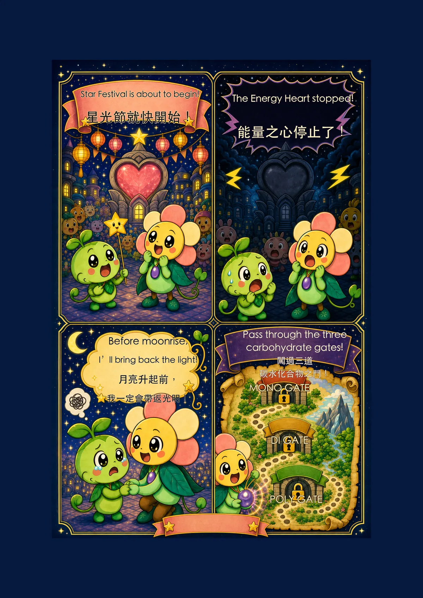
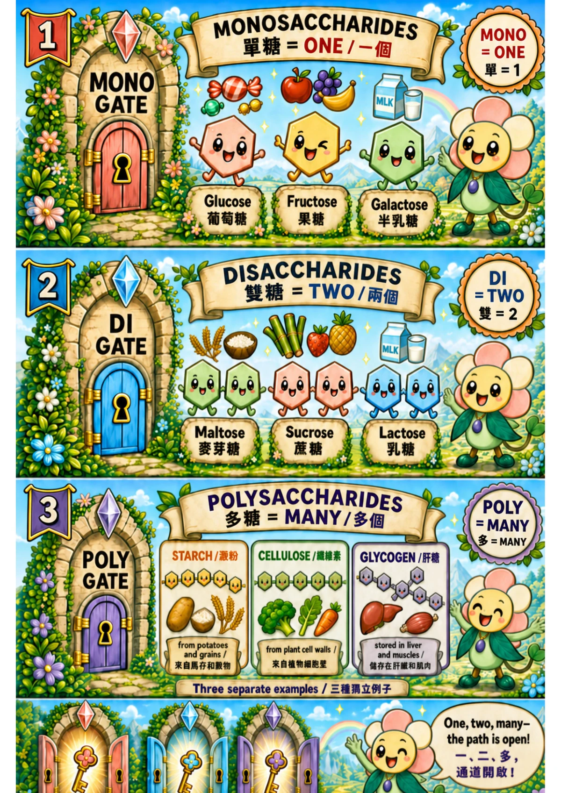
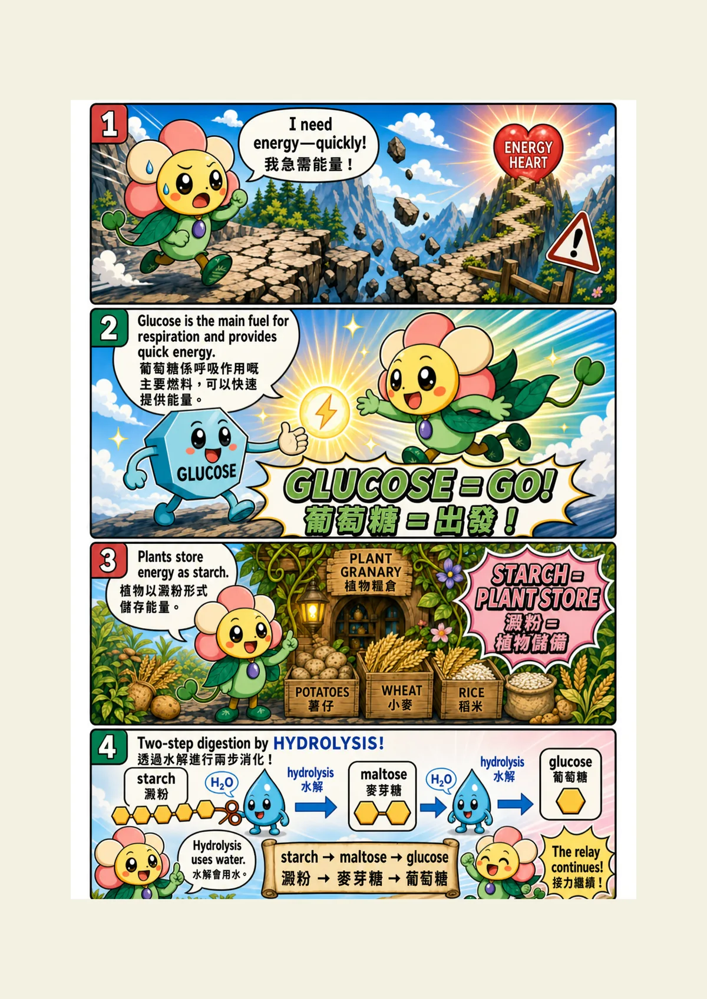
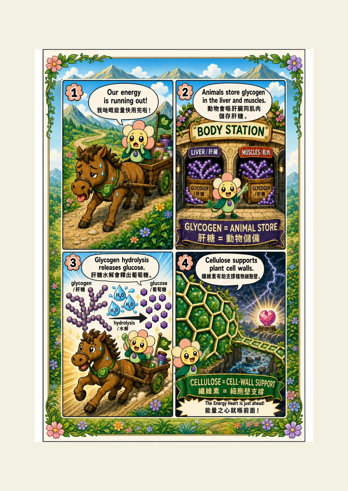
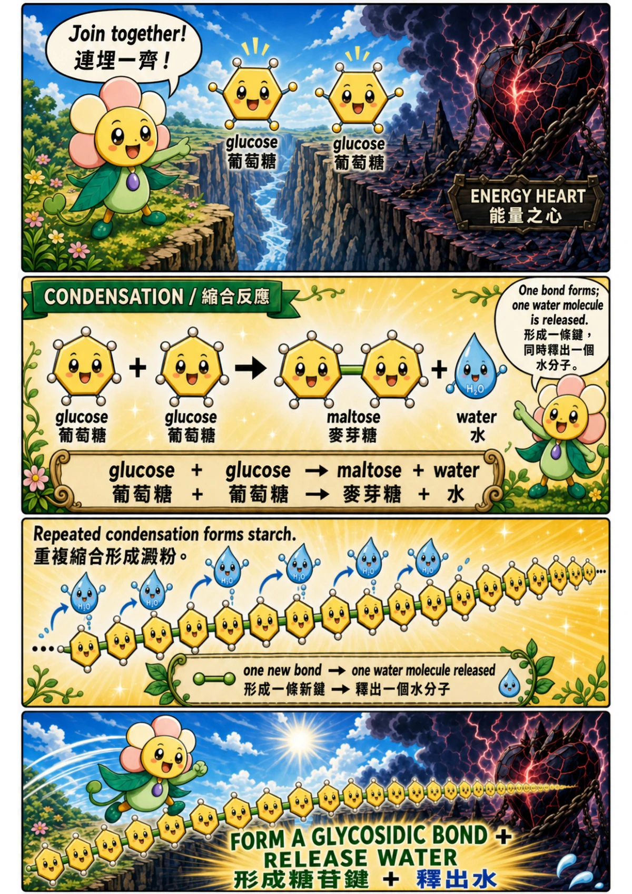
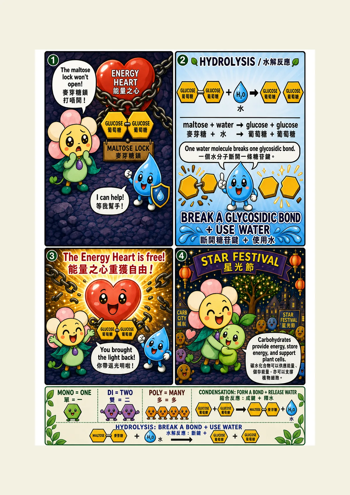

Ch 5 · Carbohydrates
Petalino Biologino and the Carbohydrate Rescue
Join Petalino Biologino in a six-page story about sugars, energy storage, condensation and hydrolysis.






Ch 5 · Carbohydrates
Join Petalino Biologino in a six-page story about sugars, energy storage, condensation and hydrolysis.





